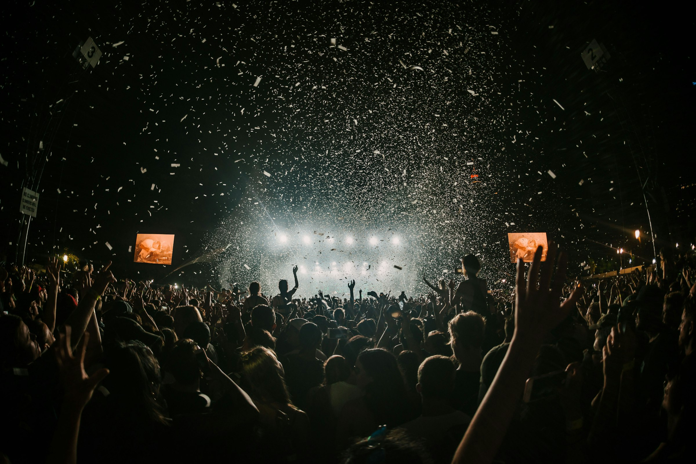

Programme
Schedule
2026 schedule not yet publishedThursday will be at Wigwam, Friday and Saturday at BPM Studio, and Sunday at Lost Lane. The timetable below is the 2025 archive and is shown only as a guide to the previous edition.
Reference only
2025 schedule archive
Choose a day. On a phone, each timetable scrolls horizontally only when needed.
Thu 02 Oct
| Time | Activity |
|---|---|
| 17:00 | Registrations |
| 18:00 | Alberto & Eme — Bachata |
| 19:00 | Seda & Miguel — Bachata |
| 20:00 | Paul & Jessica — Bachata |
Fri 03 Oct
| Time | Room 1 | Room 2 |
|---|---|---|
| 18:00 | Registration | Registration |
| 19:00 | Carlos & Ceci — Bachata | Luca & Martina — Salsa |
| 20:00 | Tobares & Ale — Bachata | Johely Guilarte — Salsa footwork |
| 21:00 | Jose Mari — Bachata | Ruben & Marina — Salsa Cubana |
Sat 04 Oct
| Time | Room 1 | Room 2 |
|---|---|---|
| 12:00 | Open door | — |
| 13:00 | Javi & Belen — Bachata | Pako & Silvia — Bachata |
| 14:00 | Nacho & Silvia — Bachata | — |
| 15:00 | Leandro & Jomante — Bachata | — |
| 16:00 | Jose Mari — Bachata | Layo — Men style |
| 17:00 | Carlos & Ceci — Bachata | Ruben & Marina — Salsa |
| 18:00 | Ash & Leni — Bachata | Virgili — Salsa Reparto |
Sun 05 Oct
| Time | Master class / Activity |
|---|---|
| 13:00 | Open door |
| 14:00 | Ash & Leni — Bachata |
| 15:00 | Leandro & Jomante — Bachata |
| 16:00 | Nacho & Silvia — Bachata |
| 17:00 | Social Bachata Cup — competition |
Need the 2026 plan?
Watch this space.
The final programme will be published here and shared through the official DSF Instagram.